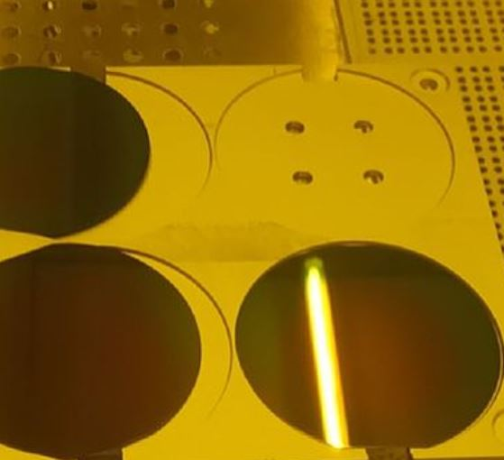

Nanostructure-Performance Correlations
Particularly investigate SPSFs (solution-processed semiconductor thin-films) structure formation and degradation process kinetics via X-ray scattering (GIXS: GISAXS, GIWAXS)

Novel Optoelectronic Devices
Design and fabrications of novel optoelectronic devices based on different types of SPSFs

Optoelectronic Chip Integrations
Develop integrated applications of SPSFs based on IC and MEMS techniques
